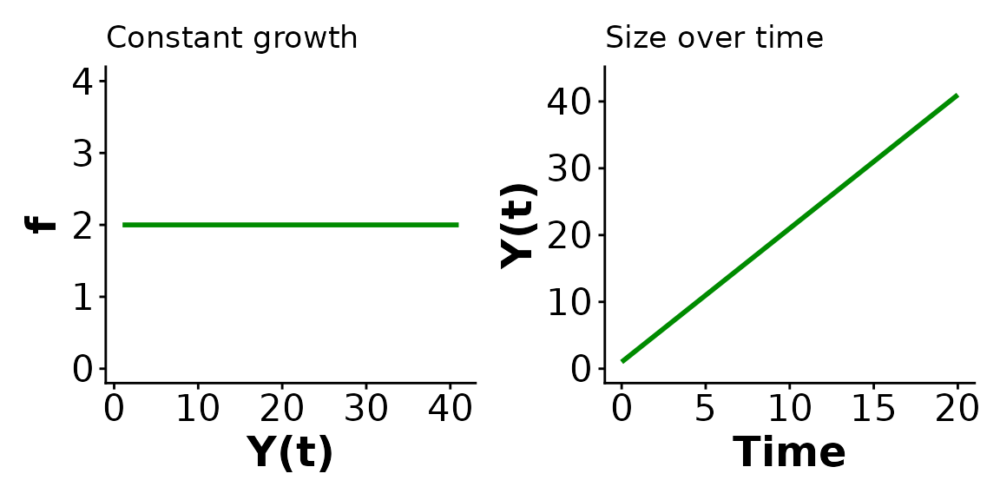
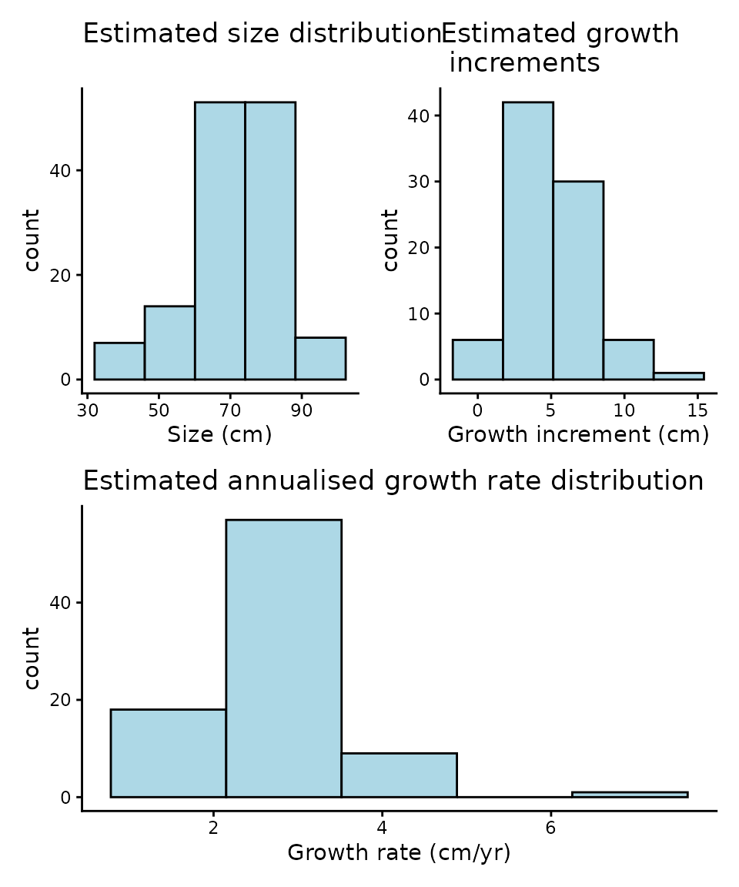
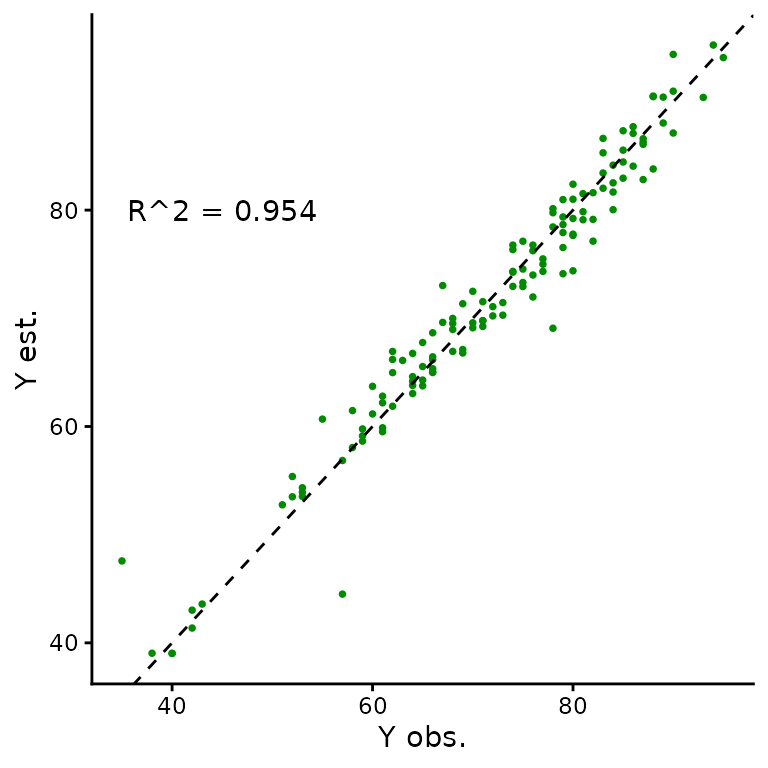

Case study 1: Constant growth with SUSTAIN Trout data
Source:vignettes/constant-growth.Rmd
constant-growth.RmdOverview
In circumstances where the number of observations available per individual is very limited, average growth rates over time may be the only plausible model to fit. In particular, if there are individuals with only two size observations, than the best that can be done is a single estimate of growth rate based on that interval. Such a model behaves as constant growth, which we can think of as the average rate of change across the observation period and is given by where is the average growth rate. The constant growth model corresponds to linear sizes over time, and is equivalent to a linear mixed model for size, where there is an individual effect when fit to multiple individuals.
Priors
The default priors for the constant top-level parameters in the single individual model are
For the multi-individual model the prior structure and default
parameters are
To change the prior parameter values (the distributions are fixed)
optional arguments can be passed to hmde_assign_data with
names corresponding to the prior_pars argument for the
associated parameter as output by hmde_models(). For
example in the following we want to change the prior for
(ind_beta) in the individual model:
hmde_model("constant_single_ind")
#> $n_obs
#> NULL
#>
#> $y_obs
#> NULL
#>
#> $obs_index
#> NULL
#>
#> $time
#> NULL
#>
#> $prior_pars_ind_beta
#> [1] 0 2
#>
#> $prior_pars_global_error_sigma
#> [1] 0 2
#>
#> $model
#> [1] "constant_single_ind"
#>
#> attr(,"class")
#> [1] "hmde_object"
#prior_pars_ind_beta is the argument name for the prior parametersThe mean passed to a log-normal distribution is the mean of the underlying normal distribution, so if you want to pass a value based on raw observations you need to log-transform it first.
Let’s simulate some data to visualise the constant growth function.
Simulate data
beta <- 2 #Annual growth rate
y_0 <- 1 #Starting size
time <- 0:20
sizes_over_time <- tibble(Y_t = 1 + beta*time, #Linear sizes over time
t = time)
sizes_over_time
#> # A tibble: 21 × 2
#> Y_t t
#> <dbl> <int>
#> 1 1 0
#> 2 3 1
#> 3 5 2
#> 4 7 3
#> 5 9 4
#> 6 11 5
#> 7 13 6
#> 8 15 7
#> 9 17 8
#> 10 19 9
#> # ℹ 11 more rowsVisualise data
Here are some plots to demonstrate how the constant growth function
relates to sizes over time for a single individual. Feel free to play
around with the parameter settings (beta, y_0)
and see how the plot changes.

#Plot of growth function
ggplot() +
geom_function(fun = hmde_model_des("constant_single_ind"), # Visualising the growth function
args = list(pars = list(beta)),
colour = "green4", linewidth=1,
xlim = c(y_0, max(sizes_over_time))) +
xlim(y_0, max(sizes_over_time$Y_t)) + # Creating the x axis
ylim(0, beta*2) + # Creating the y axis
labs(x = "Y(t)", y = "f", title = "Constant growth") + # Axe labels and plot title
theme_classic() + # Theme for the plot
theme(axis.text=element_text(size=16), # Plot customising
axis.title=element_text(size=18,face="bold"))
#Sizes over time
ggplot(data = sizes_over_time, aes(x=t, y = Y_t)) +
geom_line(colour="green4", linewidth=1) + # Line graph of sizes_over_time
xlim(0, max(sizes_over_time$t)) +
ylim(0, max(sizes_over_time$Y_t)*1.05) +
labs(x = "Time", y = "Y(t)", title = "Constant growth") +
theme_classic() +
theme(axis.text=element_text(size=16),
axis.title=element_text(size=18,face="bold"))A key take-away of the function plot (on the left) is the relationship to what we think of as a “reasonable growth model”. We don’t expect constant growth rates to be realistic, at best they represent the average rate of change over a period. More complex models may be more realistic, but in this case study we are only interested in different mechanisms of size dependence, we do not use environmental covariates for example.
SUSTAIN trout data
Our example data for the constant model comes from Moe et al. (2020), a publicly available dataset
of mark-recapture data for Salmo trutta in Norway. The time
between observations is not controlled, nor is the number of
observations per individual. As a result the data consists primarily of
individuals with two observations of size, constituting a single
observation of growth which limits the growth functions that can be fit
to individuals as a single parameter model is the best that can be fit
to two sizes. The constant growth function in Equation is the most
appropriate of the functions we have in hmde, as we can
interpret the single growth interval as an estimate of the average
growth rate that gets fit to
.
In order to best reflect the survey data we took a stratified sample
of individuals grouped by the number of available observations. We have
25 fish with two observations, 15 with three, 10 with four, for a total
sample size of 50. This data is included with hmde
Trout_Size_Data
#> # A tibble: 135 × 4
#> ind_id time y_obs obs_index
#> <dbl> <dbl> <dbl> <dbl>
#> 1 1 0 52 1
#> 2 1 1.91 60 2
#> 3 1 4.02 70 3
#> 4 1 6.04 80 4
#> 5 2 0 80 1
#> 6 2 1.90 85 2
#> 7 2 3.94 93 3
#> 8 2 5.96 94 4
#> 9 3 0 52 1
#> 10 3 2.03 65 2
#> # ℹ 125 more rowsTransform data
As initial exploration we will have a look at the distribution of observed sizes, growth behaviour, and observation intervals. First we transform the data to extract growth increment and observation interval information, then plot it.
Trout_Size_Data_transformed <- Trout_Size_Data %>%
group_by(ind_id) %>%
mutate(
delta_y_obs = y_obs - lag(y_obs),
obs_interval = time - lag(time),
obs_growth_rate = delta_y_obs/obs_interval
) %>%
ungroup()
Trout_Size_Data_transformed
#> # A tibble: 135 × 7
#> ind_id time y_obs obs_index delta_y_obs obs_interval obs_growth_rate
#> <dbl> <dbl> <dbl> <dbl> <dbl> <dbl> <dbl>
#> 1 1 0 52 1 NA NA NA
#> 2 1 1.91 60 2 8 1.91 4.18
#> 3 1 4.02 70 3 10 2.11 4.75
#> 4 1 6.04 80 4 10 2.02 4.96
#> 5 2 0 80 1 NA NA NA
#> 6 2 1.90 85 2 5 1.90 2.64
#> 7 2 3.94 93 3 8 2.04 3.92
#> 8 2 5.96 94 4 1 2.03 0.494
#> 9 3 0 52 1 NA NA NA
#> 10 3 2.03 65 2 13 2.03 6.42
#> # ℹ 125 more rowsVisualise raw data
Let’s create some histograms to investigate the distribution of size, growth interval and growth increments.
The growth histograms show that there’s a number of negative growth increments, some reasonably extreme, and when combined with some short observation periods we get very extreme estimates of growth rates. We can further investigate these if needed.
The constant growth model assumes non-negative growth and uses a log-normal distribution for , which will eliminate those increments from the estimated sizes. We consider eliminating negative growth biologically reasonable as we don’t expect the length of fish to decrease over time, even if their mass or width might.
Fit model using {hmde}
Now we will actually fit the model and extract the estimates.
You can see what data structures are needed for the constant growth model by calling:
hmde_model("constant_multi_ind") |>
names()
#> [1] "n_obs" "n_ind"
#> [3] "y_obs" "obs_index"
#> [5] "time" "ind_id"
#> [7] "prior_pars_pop_log_beta_mu" "prior_pars_pop_log_beta_sigma"
#> [9] "prior_pars_global_error_sigma" "model"Each represents an element of the list that gets passed to the model:
- n_obs is the integer number of observations
- n_ind is the integer number of individuals -
y_obs is the vector of
observations and should have length n_obs -
obs_index is a vector containing integer the
index for individual
,
and counts which observation
is in sequence - time is a vector that determines when an
observation happened relative to the first observation for that
individual. The first observation has time 0 - ind_id is a
vector the same length as y_obs that tracks which
individual an observation comes from -
prior_pars_pop_log_beta_mu is the vector of prior
parameters for the log-beta mean hyper-parameter -
prior_pars_pop_log_beta_sigma is the vector of prior
parameters for the log-beta standard deviation hyper-parameter -
prior_pars_global_error_sigma is the vector of prior
parameters for the global error standard deviation - model
is the name of the model
Now we will actually fit the model and extract the estimates. As the
provided trout data is already in the form required by the
hmde_assign_data function we don’t need to do any further
re-naming and can pass it directly.
trout_constant_fit <- hmde_model("constant_multi_ind") |>
hmde_assign_data(data = Trout_Size_Data) |>
hmde_run(chains = 4, cores = 1, iter = 2000)
#>
#> SAMPLING FOR MODEL 'constant_multi_ind' NOW (CHAIN 1).
#> Chain 1:
#> Chain 1: Gradient evaluation took 2.6e-05 seconds
#> Chain 1: 1000 transitions using 10 leapfrog steps per transition would take 0.26 seconds.
#> Chain 1: Adjust your expectations accordingly!
#> Chain 1:
#> Chain 1:
#> Chain 1: Iteration: 1 / 2000 [ 0%] (Warmup)
#> Chain 1: Iteration: 200 / 2000 [ 10%] (Warmup)
#> Chain 1: Iteration: 400 / 2000 [ 20%] (Warmup)
#> Chain 1: Iteration: 600 / 2000 [ 30%] (Warmup)
#> Chain 1: Iteration: 800 / 2000 [ 40%] (Warmup)
#> Chain 1: Iteration: 1000 / 2000 [ 50%] (Warmup)
#> Chain 1: Iteration: 1001 / 2000 [ 50%] (Sampling)
#> Chain 1: Iteration: 1200 / 2000 [ 60%] (Sampling)
#> Chain 1: Iteration: 1400 / 2000 [ 70%] (Sampling)
#> Chain 1: Iteration: 1600 / 2000 [ 80%] (Sampling)
#> Chain 1: Iteration: 1800 / 2000 [ 90%] (Sampling)
#> Chain 1: Iteration: 2000 / 2000 [100%] (Sampling)
#> Chain 1:
#> Chain 1: Elapsed Time: 0.66 seconds (Warm-up)
#> Chain 1: 0.555 seconds (Sampling)
#> Chain 1: 1.215 seconds (Total)
#> Chain 1:
#>
#> SAMPLING FOR MODEL 'constant_multi_ind' NOW (CHAIN 2).
#> Chain 2:
#> Chain 2: Gradient evaluation took 2.1e-05 seconds
#> Chain 2: 1000 transitions using 10 leapfrog steps per transition would take 0.21 seconds.
#> Chain 2: Adjust your expectations accordingly!
#> Chain 2:
#> Chain 2:
#> Chain 2: Iteration: 1 / 2000 [ 0%] (Warmup)
#> Chain 2: Iteration: 200 / 2000 [ 10%] (Warmup)
#> Chain 2: Iteration: 400 / 2000 [ 20%] (Warmup)
#> Chain 2: Iteration: 600 / 2000 [ 30%] (Warmup)
#> Chain 2: Iteration: 800 / 2000 [ 40%] (Warmup)
#> Chain 2: Iteration: 1000 / 2000 [ 50%] (Warmup)
#> Chain 2: Iteration: 1001 / 2000 [ 50%] (Sampling)
#> Chain 2: Iteration: 1200 / 2000 [ 60%] (Sampling)
#> Chain 2: Iteration: 1400 / 2000 [ 70%] (Sampling)
#> Chain 2: Iteration: 1600 / 2000 [ 80%] (Sampling)
#> Chain 2: Iteration: 1800 / 2000 [ 90%] (Sampling)
#> Chain 2: Iteration: 2000 / 2000 [100%] (Sampling)
#> Chain 2:
#> Chain 2: Elapsed Time: 0.622 seconds (Warm-up)
#> Chain 2: 0.43 seconds (Sampling)
#> Chain 2: 1.052 seconds (Total)
#> Chain 2:
#>
#> SAMPLING FOR MODEL 'constant_multi_ind' NOW (CHAIN 3).
#> Chain 3:
#> Chain 3: Gradient evaluation took 2.1e-05 seconds
#> Chain 3: 1000 transitions using 10 leapfrog steps per transition would take 0.21 seconds.
#> Chain 3: Adjust your expectations accordingly!
#> Chain 3:
#> Chain 3:
#> Chain 3: Iteration: 1 / 2000 [ 0%] (Warmup)
#> Chain 3: Iteration: 200 / 2000 [ 10%] (Warmup)
#> Chain 3: Iteration: 400 / 2000 [ 20%] (Warmup)
#> Chain 3: Iteration: 600 / 2000 [ 30%] (Warmup)
#> Chain 3: Iteration: 800 / 2000 [ 40%] (Warmup)
#> Chain 3: Iteration: 1000 / 2000 [ 50%] (Warmup)
#> Chain 3: Iteration: 1001 / 2000 [ 50%] (Sampling)
#> Chain 3: Iteration: 1200 / 2000 [ 60%] (Sampling)
#> Chain 3: Iteration: 1400 / 2000 [ 70%] (Sampling)
#> Chain 3: Iteration: 1600 / 2000 [ 80%] (Sampling)
#> Chain 3: Iteration: 1800 / 2000 [ 90%] (Sampling)
#> Chain 3: Iteration: 2000 / 2000 [100%] (Sampling)
#> Chain 3:
#> Chain 3: Elapsed Time: 0.661 seconds (Warm-up)
#> Chain 3: 0.438 seconds (Sampling)
#> Chain 3: 1.099 seconds (Total)
#> Chain 3:
#>
#> SAMPLING FOR MODEL 'constant_multi_ind' NOW (CHAIN 4).
#> Chain 4:
#> Chain 4: Gradient evaluation took 2.2e-05 seconds
#> Chain 4: 1000 transitions using 10 leapfrog steps per transition would take 0.22 seconds.
#> Chain 4: Adjust your expectations accordingly!
#> Chain 4:
#> Chain 4:
#> Chain 4: Iteration: 1 / 2000 [ 0%] (Warmup)
#> Chain 4: Iteration: 200 / 2000 [ 10%] (Warmup)
#> Chain 4: Iteration: 400 / 2000 [ 20%] (Warmup)
#> Chain 4: Iteration: 600 / 2000 [ 30%] (Warmup)
#> Chain 4: Iteration: 800 / 2000 [ 40%] (Warmup)
#> Chain 4: Iteration: 1000 / 2000 [ 50%] (Warmup)
#> Chain 4: Iteration: 1001 / 2000 [ 50%] (Sampling)
#> Chain 4: Iteration: 1200 / 2000 [ 60%] (Sampling)
#> Chain 4: Iteration: 1400 / 2000 [ 70%] (Sampling)
#> Chain 4: Iteration: 1600 / 2000 [ 80%] (Sampling)
#> Chain 4: Iteration: 1800 / 2000 [ 90%] (Sampling)
#> Chain 4: Iteration: 2000 / 2000 [100%] (Sampling)
#> Chain 4:
#> Chain 4: Elapsed Time: 0.637 seconds (Warm-up)
#> Chain 4: 0.525 seconds (Sampling)
#> Chain 4: 1.162 seconds (Total)
#> Chain 4:Inspect estimates
Once the model has finished running, we can extract the model estimates and have a look at the distribution of estimated sizes, estimated growth increments, and annualised growth rates at the level of sizes over time.
trout_constant_estimates <- hmde_extract_estimates(
fit = trout_constant_fit,
input_measurement_data = Trout_Size_Data)First, let’s do some quick data wrangling to calculate our parameters of interest.
measurement_data_transformed <- trout_constant_estimates$measurement_data %>%
group_by(ind_id) %>%
mutate(
delta_y_obs = y_obs - lag(y_obs),
obs_interval = time - lag(time),
obs_growth_rate = delta_y_obs/obs_interval,
delta_y_est = y_hat - lag(y_hat),
est_growth_rate = delta_y_est/obs_interval
) %>%
ungroup()Now we can have a look at the distirbution of each of the estimated parameter by creating histograms
est_hist_y_hat <- histogram_func(measurement_data_transformed, y_hat,
"Estimated size distribution",
xlab = "Size (cm)",
bins = 5)
est_hist_delta_y_est <- histogram_func(measurement_data_transformed, delta_y_est,
"Estimated growth \n increments",
xlab = "Growth increment (cm)",
bins = 5)
est_hist_growth_rate <- histogram_func(measurement_data_transformed, est_growth_rate,
"Estimated annualised growth rate distribution", xlab = "Growth rate (cm/yr)",
bins = 5)
(est_hist_y_hat + est_hist_delta_y_est) / est_hist_growth_rate 
We can see that the negative growth increments are gone! Because we fit a positive growth function () the model cannot actually estimate negative growth increments.
We can also directly compare the observed sizes over time to estimated values.
We can use calculated on , and inspect we can look at plots of sizes over time. The statistic is a metric primarily used in linear regression that measures the proportion (ie. decimal value in the [0,1] interval) of variance in one coordinate that can be explained by the regression model. In this context, we interpret it as how strongly the fitted and observed values agree. We don’t expect perfect agreement – – because we don’t get perfect agreement. O’Brien, Warton, and Falster (2024) showed that the change between observed and fitted values can actually correct for measurement errors in size, so disagreement is not a bad thing overall.
In the next block, we are looking at 5 random individuals to start with because plotting every individuals’ sizes over time can get very messy.
#Quantitative R^2
cor(measurement_data_transformed$y_obs, measurement_data_transformed$y_hat)^2
#> [1] 0.9540111
r_sq_est <- cor(trout_constant_estimates$measurement_data$y_obs,
trout_constant_estimates$measurement_data$y_hat)^2
r_sq <- paste0("R^2 = ",
signif(r_sq_est,
digits = 3))
obs_est_size_plot <- ggplot(data = trout_constant_estimates$measurement_data,
aes(x = y_obs, y = y_hat)) +
geom_point(shape = 16, size = 1, colour = "green4") +
xlab("Y obs.") +
ylab("Y est.") +
geom_abline(slope = 1, linetype = "dashed") +
annotate("text", x = 45, y = 80,
label = r_sq) +
theme_classic()
obs_est_size_plot
#Plots of size over time for a sample of 5 individuals
size_over_time_plot <- hmde_plot_obs_est_inds(n_ind_to_plot = 5,
measurement_data = trout_constant_estimates$measurement_data)
size_over_time_plotIndvidual growth functions ()
At the level of individuals we are interested in the distribution of estimates, which will align with the estimated annualised growth rates as that’s precisely what they represent. Here is one way to visualise the fitted growth functions in order to see how they compare to the observed sizes.
Population hyper-parameters
We also get estimates of the population-level hyper-parameters that govern the distribution of – and for the log-normal distribution. These are calculated in the context of the log-transformed parameters so the easiest way to interpret is to back-transform it through exponentiation, but this does not so easily transfer to . The CIs in this output are posterior credible intervals taken as the central 95% quantiles of the posterior samples.
#Mean of normal distribution
trout_constant_estimates$population_data$mean[1] #Raw value
#> [1] 0.8812017
print(paste0("95% CI for mean log growth: (",
trout_constant_estimates$population_data$CI_lower[1], " , ",
trout_constant_estimates$population_data$CI_upper[1], ")")) #Raw CI
#> [1] "95% CI for mean log growth: (0.577979967794788 , 1.11797940744988)"
exp(trout_constant_estimates$population_data$mean[1]) #In cm/yr units
#> [1] 2.413799
print(paste0("95% CI for mean growth in cm/yr: (",
exp(trout_constant_estimates$population_data$CI_lower[1]), " , ",
exp(trout_constant_estimates$population_data$CI_upper[1]), ")"))
#> [1] "95% CI for mean growth in cm/yr: (1.78243421713959 , 3.05866763409531)"
#Standard deviation of underlying normal distribution
trout_constant_estimates$population_data$mean[2]
#> [1] 0.4846497
print(paste0("95% CI for log growth standard deviation: (",
trout_constant_estimates$population_data$CI_lower[2], " , ",
trout_constant_estimates$population_data$CI_upper[2], ")")) #Raw CI
#> [1] "95% CI for log growth standard deviation: (0.173827701537664 , 0.8358819473229)"From the species-level data we can say that the average annual growth rate for the species is estimated to be 2.4cm/yr, with a 95% posterior CI of (1.83, 3.04). As we fit a constant growth model there’s only so much we can say about the growth behaviour.